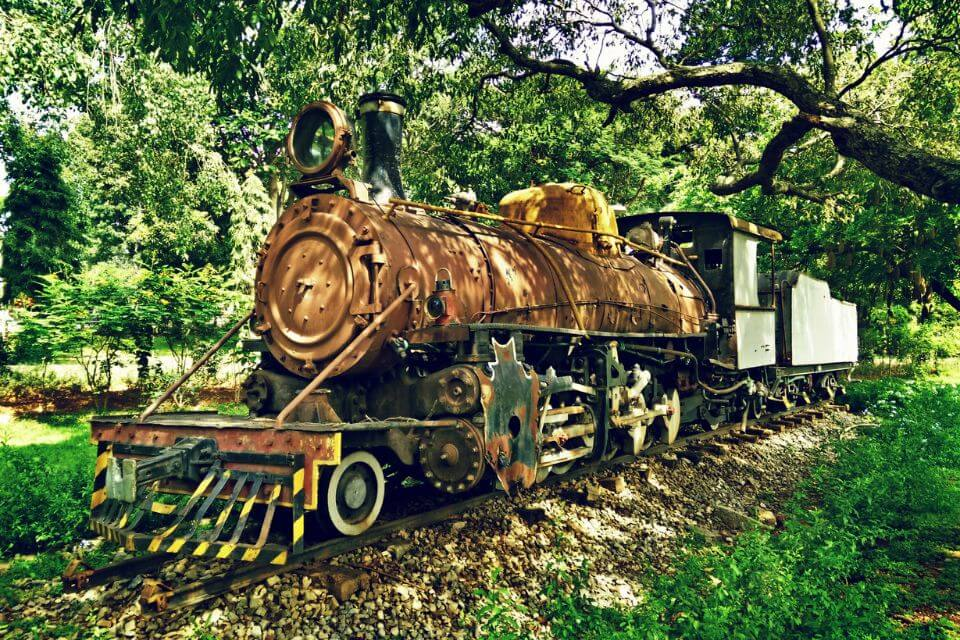

Welcome to Freedom Park

Freedom Park in Bengaluru is located in the heart of the city near Gandhi Nagara, less than 2 kms from Majestic and Cubbon Park. This Park showcases the campus that was formerly a central jail.
History: This central jail holds historical importance as it housed several prominent political leaders during the 1975 Emergency. Freedom Park was inaugurated by the former Union Minister Lal Krishna Advani and was made accessible to the public in 2008.
Why to visit Park: Freedom Park lets visitors gain a glimpse of life in prison. Elements of a prison such as residential quarters (known as barracks), watch tower, hanging spot and jail hospital can be seen. A jogger’s track & children’s play area are also available. Freedom Park is one of the few places where you can get a close view of correctional facilities. Seeing the hanging spot- where convicts assigned death sentences were hung to death is a nerve shaking experience. Multiple well maintained gardens exist and the campus also offers good photo opportunities thanks to historic buildings and colourful gardens.
Visiting Hours and Facilities: This Park has no entry fee and is open to the public every day from 5 AM to 8.30 AM and 4 PM to 8 PM. The place is vast enough to accommodate parking, free of cost. There are restrooms also available to use which are also free of cost. Approximately 1.5-2 hours is recommended to explore the park. When in Bengaluru, don’t miss a short visit to Freedom Park.
How to reach: Cubbon Park metro station and Majestic Metro station are the two closest metro stations to the Park. Autos or ride hailing taxi service can be availed to reach Freedom Park from metro station or other parts of Bengaluru city.
Places to stay near Park: Gandhi Nagar area (1 km from the park) has several budget and mid range hotels